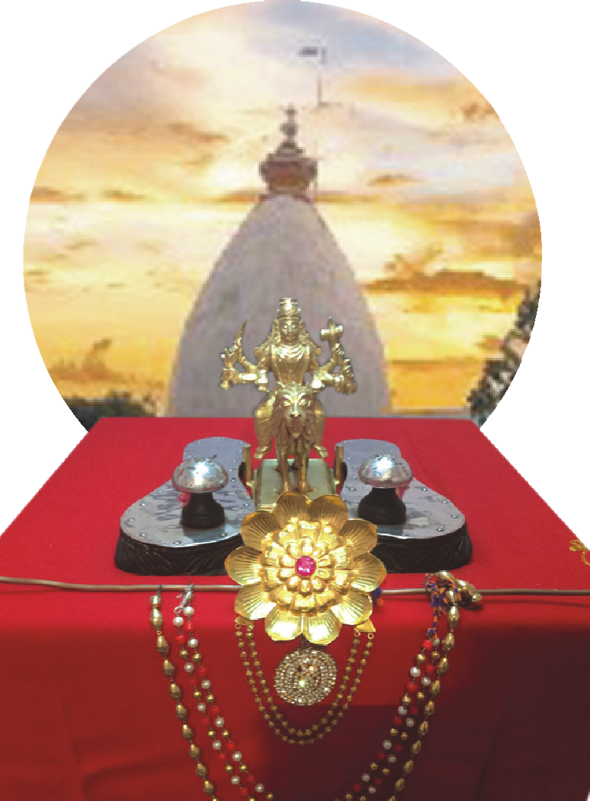

|| श्री भक्तकार्यकल्पद्रुम गुरुसार्वभौम श्रीमद्राजाधिराज योगिमहाराज त्रिभुवनानन्द अद्वैत अभेद निरञ्जन निर्गुण निरालम्ब परिपूर्ण सदोदित सकलमतस्थापित श्री सद्गुरु माणिकप्रभु महाराज की जय ||
|| శ్రీ భక్తకార్యకల్పదృమ గురుసార్వభౌమ శ్రీమద్రాజాధిరాజ యోగీమహారాజ త్రిభువనానంద అద్వైత అభేద నిరంజన నిర్గుణ నిరాలంబ పరిపూర్ణ సదోదిత సకలమతస్థాపిత శ్రీ సద్గురు మాణికప్రభు మహారాజ కీ జయ ||
|| శ్రీ భక్తకార్యకల్పదృమ గురుసార్వభౌమ శ్రీమద్రాజాధిరాజ యోగీమహారాజ త్రిభువనానంద అద్వైత అభేద నిరంజన నిర్గుణ నిరాలంబ పరిపూర్ణ సదోదిత సకలమతస్థాపిత శ్రీ సద్గురు మాణికప్రభు మహారాజ కీ జయ ||
- 🌸1. श्री माणिक प्रभु चे हिंदी पद के लिए क्लिक करें
- 🌼2. శ్రీ మాణిక్ ప్రభు తెలుగు భజనల కోసం ఇక్కడ క్లిక్ చేయండి
ॐ

Shri Sadguru Manik Prabhu Maharaj
Shri Sadguru Manik Prabhu Maharaj (1817–1865) from India was a Hindu saint, poet, philosopher, and a Guru. He is regarded as the fourth full incarnation of the Universal Lord Dattatreya. He is an Avadhuta, ever anchored in Atman (Spirit), but always overflowing with compassion for all the beings and the entire creation. His philosophy is known as ‘Sakala Mata Siddhanta’ or ‘Sakala Mata Sampradhaya’.

Shri Datta Martand Mandir
Shri Datta Martand Mandir, Muktashram, Krishnapur, Zahirabad, Sangareddy District, Telangana, 502246.

Shri Manik Prabhu Mandir, Prabhu Nagar
Prabhunagar, Nawabpet Mandal, Rangareddi District, Telangana.